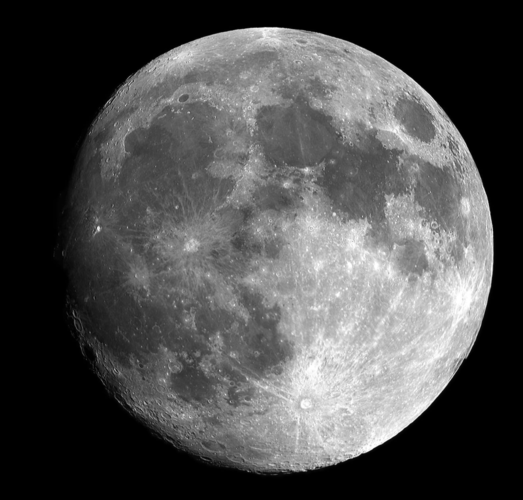

Of course, the Moon’s prominence in the night sky has influenced humanity for millennia. Associating it with different deities, cultures all over the world revered it. In numerous cultures—as exemplified in Korean mythology—the Sun and Moon were often connected as siblings or companions of some sort, and almost always each was assigned a separate gender.
Moon deities were both gods and a goddesses in different faiths around the world. Some of the best known were female, like Selene, worshipped by the ancient Greeks who believed she drove the Moon in her chariot across the sky each night. The Chinese revered the goddess Chang’e, whose origin story is a key part of China’s modern-day celebration of the Mid-Autumn Festival, which celebrates the brightest full Moon of the year. In ancient Egypt, the moon was male embodied by the gods Khonshu and Thoth. Chandra, the Hindu god of the moon (also known as Soma), was also believed to control fertility and plants.
PHOTOGRAPH BY WILD WONDERS OF EUROPE, NATURE PICTURE LIBRARY/ALAMY STOCK PHOTO